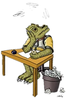
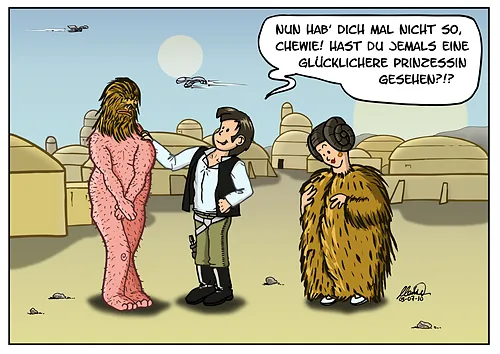
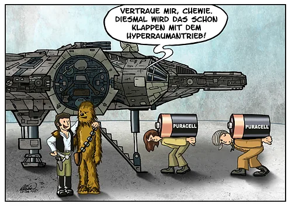
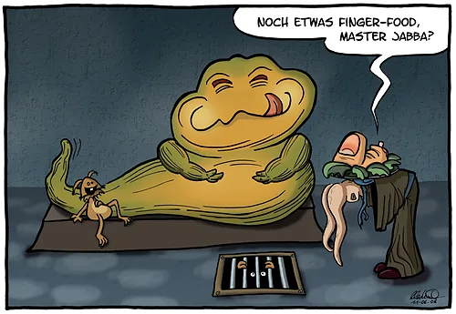
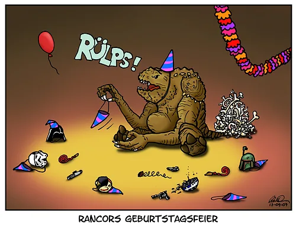
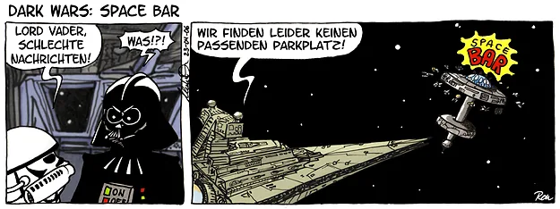
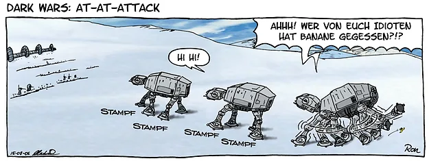
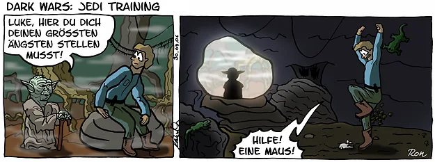
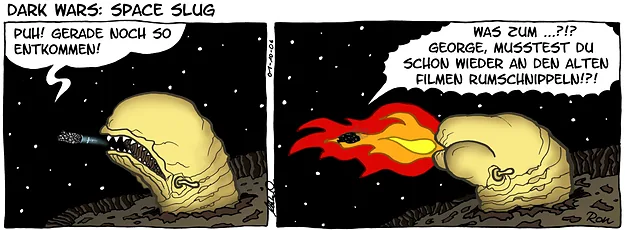
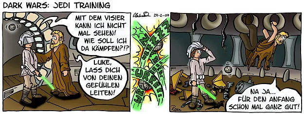

cartoons.de
cartoons.deDark Wars – Star Wars Cartoons

Als großer Star-Wars-Fan macht es mir besonders viel Freude, meine Star-Wars-Helden durch den Kakao zu ziehen. Die Reihe Dark Wars besteht aus verschiedenen Comic-Strips, in letzter Zeit durch einzelne Cartoons zum Thema Star Wars abgelöst.
Wie ein Dark-Wars-Comic entsteht, zeige ich im Star-Wars-Tutorial.
Ein Archiv der existierenden Star-Wars-Cartoons finden Sie in meiner Galerie über Film-Parodien der Comic-Community toonsUp!
Star-Wars-Cartoons




Star-Wars-Comic-Strips: Dark Wars
Angefangen habe ich mit Comic-Strips zu Star Wars, die auch im Offiziellen Star Wars Magazin (bzw. Journal of the Whills) abgedruckt wurden. Das war eine tolle Erfahrung: Die Cartoons mussten sogar von Lucasfilm abgesegnet werden.
Und nicht immer waren die Jungs aus Kalifornien mit meinen Pointen zufrieden! ;)





Tutorial: So entstehen die Dark-Wars-Comics →